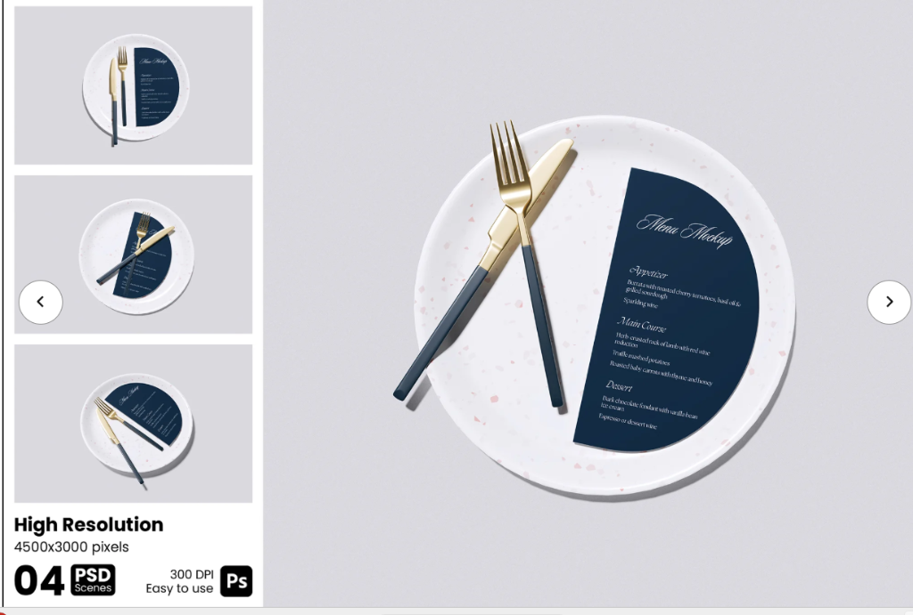

Our story starts
with a soulful simmer.
From the historic broth stalls of Fukuoka to the bustling streets of Indiranagar. Five years of honoring time-honored ramen craft, one rolling simmer at a time.
The Origin
Born from a reverence for real broth.
Epicure Ramen & Noodles began in the winter of 2018 when founders Chef Kenjiro and Rameen embarked on a culinary pilgrimage across Japan. In tiny eight-seat noodle bars tucked behind train stations, they watched ramen masters dedicate their entire lives to perfecting a single pot of stock.
They realized that true ramen is not fast food: it is liquid alchemy. A harmony of pure spring water, marrow extraction, aged cedar barrel tares, and handcrafted wheat noodles rolled to exact hydration percentages.
In 2019, they brought that dedication to Indiranagar, Bengaluru. What started as a humble 12-seat counter has grown into a beloved sanctuary for food lovers seeking authenticity, warmth, and a deeper connection around the table.

Our Culinary Tenets
The Four Pillars of Epicure Broth Mastery
Every single bowl served in our house is governed by these uncompromising craft standards.
18-Hour Unbroken Simmer
We never rush extraction. Tonkotsu bones are gently blanched, cleansed, and boiled for 18 continuous hours to dissolve natural marrow into a silky collagen emulsion without heavy artificial fats.
100-Year Cedar Barrel Tare
Our seasoning sauces (tare) are infused with heirloom Japanese soy sauce aged in wooden barrels, sun-dried Rishiri kombu, and slow-roasted mirin to create distinct savory layers.
32% Hydration Wheat Noodles
Noodles are kneaded in-house daily with mineral-balanced kansui water and stone-milled wheat flour, resting for 24 hours to develop that signature bouncy, springy bite (koshibari).
Binchotan Charcoal Finish
Every slice of rolled chashu pork belly is slow-braised for 6 hours, chilled, and individually torched over white binchotan charcoal right before landing in your bowl.
Quality of Service & Table Setting
Omotenashi: Service with a Soul.
In Japan, hospitality is never theatrical: it is Omotenashi — the quiet, mindful anticipation of a guest’s every need before they even ask. From our curated table ceramics to thermal broth precision, every detail at your seat is prepared with reverence.

Crispy pork gyoza or burrata with cherry tomatoes & basil oil, paired with Sparkling Yuzu.
18-hour Tonkotsu or herb-crusted broth selection with torched chashu & ajitama egg.
Toasted black sesame fondant with vanilla bean gelato & ceremonial cold-brew matcha.
The Scented Cedar Oshibori
Upon sitting down, guests are greeted with a warm, steamed cotton towel infused with Hinoki cypress and a welcoming cup of hand-whisked roasted green tea.
Terrazzo Ceramics & Gold Cutlery
We commissioned bespoke speckled terrazzo stoneware plates and balanced matte navy & gold utensils to accompany our handmade ramen bowls, elevating noodle dining into fine art.
88°C Thermal Precision
Every bowl is served within 45 seconds of leaving the rolling boil at exactly 88°C — the golden thermodynamic window where aroma oils vaporize without scalding the palate.
Unspoken Attentiveness
Complimentary linen aprons, wooden hair ties, discrete broth tare adjustments, and glasses never left empty. True service is felt, never forced.
Our Journey
From 12 seats to 10,000 smiles.
Every milestone in our broth journey, crafted with patience, passion, and soul.
The Alleyway Counter on Noodle Lane
We opened with just one single bubbling cauldron of Tonkotsu and 12 wooden bar stools in Indiranagar. Lines formed around the block before our 6 PM opening.
Mastering the Five Broths
We expanded our dedicated broth kitchen, refining our fermented Hokkaido Miso, Yuzu Shio, and Tokyo Shoyu recipes with artisanal suppliers in Japan and local organic farms.
10,000 Guests Welcomed
Celebrated our 10,000th bowl served. Featured as Bengaluru's Best Authentic Ramen Destination by premier culinary critics and food publications.
The Broth House & Midnight Noodle Bar
Now operating two distinct dining experiences: daytime craft dining at The Broth House, and late-night izakaya slurps at Midnight Noodle Bar, equipped with live bowl customization.
The Artisans
Meet the team behind the bowl.

Kenjiro Sato
Head Broth Master
Trained in Fukuoka with 16 years of broth mastery. Oversees every 18-hour simmer and tare recipe.

Haruto Tanaka
Master Noodle Artisan
A specialist in alkaline flour chemistry, crafting our 32% hydration springy wheat noodles daily.

Maya Sen
Hospitality & Tea Director
Curates our artisanal tea pairings, craft yuzu sodas, and ensures genuine warmth for every guest.
Join Our Table